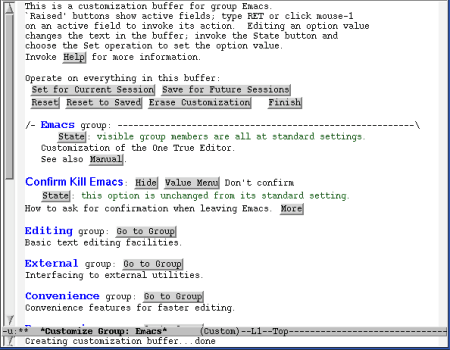
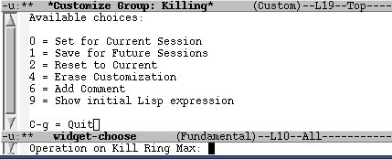

14. Personalización de Emacs
Pág.Anterior | Índice | Pág.Siguente
Se ha comentado anteriormente sobre la posibilidad de personalizar Emacs, de adaptarlo a nuestras particulares necesidades. Ello se consigue realizando cambios en los parámetros que Emacs nos presenta por defecto.
Para llevar a cabo determinados cambios en Emacs se requieren conocimientos de programación en Lips. En este capítulo nos vamos a centrar en otro tipo de cambios: Aquellos que puedes realizarse sin ningún conocimiento prévio de programación.
Desde esta premisa, se nos abren tres vias para llevar a cabo la personalización de Emacs:
- Mediante la interfaz gráfica Custom Mediante las opciones de menú Options
- Editando directamente el archivo de configuración .emacs
Sea cual sea el medio utilizado, el resultado final es siempre una modificación del archivo .emacs
Debemos decir también que el método más rápido de personalizar Emacs es mediante las opciones del menú Options, guardando los cambios realizados con : Options -->Save Options.
Seguidamente vamos a describir, muy esquematicamente, las mencionadas vias de personalización, pretendiendo sólo proporcionar los elementos necesarios que permitan al usuario ir experimentando con ellas. La forma más solida para su aprendizaje.
14.1 Custom.
Pág.Anterior | Índice | Inicio Página | Pág.Siguente
Custom es una interfaz semi-gráfica que nos permite personalizar numerosos aspectos de Emacs con una relativa sencillez.
Se puede acceder a Custom de dos formas:
- Barra de herramientas : Activando el icono
- Comando "largo" : M-x custom <Enter>
14.1.1 La pantalla de Custom .
Pág.Anterior | Índice | Inicio Página | Pág.Siguente
Al acceder a Custom se nos presenta la siguiente pantalla:
|  |
Para movernos por la pantalla de custom podemos utilizar el ratón ( el medio más sencillo) o las teclas habituales en Emacs [4.Movimientos del cursor].
Cuando necesitemos activar alguno de los botones que aparecen en la ventana de Custom podemos hacerlo de dos maneras:
- Clicando sobre él con el ratón.
- Llevar el cursor al interior del botón y pulsar <Enter>
Con el comando C-x k abandonamos la pantalla de Custon, pasando al buffer que estábamos visionando anteriormente.
Al inicio de la pantalla de Custom nos encontramos con un grupo de opciones que afectan a todo el buffer:
Set for Current Session : Para guardar los cambios de modo que afecten sólo a la presente sesión de Emacs.
Save for Future Sessions: Los cambios que serán guardados en el archivo de configuración .emacs, de manera que seguirán vigentes en futuras sesiones.
Reset : Deshace los últimos cambios realizados, asumiendo los valores anteriores a dichos cambios.
Reset to Saved : Deshace los últimos cambios realizados con Save for Future Sessions, asumiendo los valores anteriores a dichos cambios.
Erase Custonization : Deshace todo cambio realizado por Custom, tanto si se ha realizado realizado através de Set for Current Session como através de Save for Future Sessions
Finish : Cierra el presente buffer, pasando a la pantalla anterior.
14.1.2 Grupos .
Pág.Anterior | Índice | Inicio Página | Pág.Siguente
Custom agrupa las opciones en los denominados Grupos, organizados jerarquicamente en Grupos Padre y en Grupos Hijos
Para acceder al grupo padre del grupo en que nos encontremos, debemos hacerlo activando el botón que aparece a continuación de Go to Parent Group :
En este ejemplo, nos encontramos en el grupo Editing . El grupo padre al que regresariamos es Emacs
Con el fin de facilitar el acceso a la opción deseada, dentros de cada grupo las distintas opciones se encuentran, a su vez, agrupadas en subgrupos.
En cada pantalla de Custom nos encontramos con una serie de variables y opciones.
El valor actual de la variable se encuetra en el campo de texto, a la derecha de la pantalla y , normalmente, sobre un fondo gris.
Dicho valor puede editarse y cambiarse. Para que el cambio sea efectivo debe guardarse mediante la activación del botón State
Con la activación de State aparecerá un buffer con las distintas opciones o una ventana de menú. en el caso de llevar a cabo la activación con el ratón . Para la elección de la opción deseada puede utilizarse el ratón o puede introducirse su número en el mini-buffer y pulsar <Enter>:
Esta es la ventana de meú que aparece al activar State con el ratón.:
Cuando activamos State con el cursor nos aparece un buffer como éste:
|  |
las opciones que nos presenta State son:
Set for Current Sesion
Save for Future Sessions
Erase Customization
Como vemos, hasta aqui coinciden con opciones ya vistas. Las nuevas son:
Use Backup Value : Sustituye los nuevos valores por los inmediatamente anteriores guardados.
Add Comment: Permite introducir comentarios. Cuando se guardan cambios sólo para la actual sesión, esta será también la vigencia de los comentarios.
14.2 El menú Options.
Pág.Anterior | Índice | Inicio Página | Pág.Siguente
Algunas variables pueden personalizarse directamente através de las opciones que nos ofrece el menú Options .
Pero debe advertirse que, dependiendo de la versión de Emacs que estemos utilizando, las opciones que nos presenta el citado menú pueden variar.
Asi, por ejemplo, en la versión Emacs 22 , en la plataforma Mac OSX, aparece la opción Show/Hide , que nos permite ocultar/mostrar (conmutar) elementos tales como la barra de menú, la barra de herramientas, número de línea, número de columna ...etc.
Si en nuestra versión de Emacs no se dispone de esta opción, no tendremos mas remedio que personalizar estas caracteristicas de Emacs mediante Customize o modificando el archivo de configuración .emacs
El menú Options , en Emacs 21.4.1 presenta el siguiente aspecto:
Es muy recomendable ir explorando las opciones que nos ofrece Options . Destacaremos dos de sus opciones:
Save Options :Nos permite guardar los cambios realizados.
Customize Emacs : Este submenú nos permite "acortar" el proceso de personalización de las variables mas comunes.
Vamos a centrarnos en la opción Options --> Customize Emacs. Al acceder a ella aparecen las siguientes opciones:
Através de la opción Options --> Customize Emacs --> Top-level Customization Group. accedemos a la pantalla inicial de Custom.
Una de las mayores dificultades con que nos enfrentamos a la hora de personalizar Emacs es la localización de la variable correspondiente.
Tenemos dos maneras de buscar la variable apropiada:
Una de ellas ya la hemos tratado, consiste en navegar atraves de la jerarquia de Custom, activando Options --> Customize Emacs--> Top-level Customization Group
Otra posibilidad está en utilizar la opción Options --> Customize Emacs--> Brownse Customization Groups. Al activar esta opción se nos muestra un buffer como el siguiente buffer:
Aquí, los diversos grupos se nos presentan de una forma compacta e intuitiva.
Pulsando + se despliega el subgrupo, pulsando - se cierra el subgrupo ( se baja y se sube en la jerarquia.):
Para localizar la variable que deseamos personalizar podemos utilizar también la función de auto-completado que nos proporciona la tecla <Tab>.
Para ello procederemos de la siguiente manera:
Seleccionaremos la opción: Options --> Customize Emacs --> Specific Option. o teclearemos en el mini-buffer: M-x customize-option <Enter>.
En ambos casos aparecerá el mensaje: Customize variable: .
Introduciremos la parte conocida de la variable y pulsaremos la tecla <Tab>.
Se abrirá el buffer *Completions* . ofreciéndonos diversas alternativas.
Para la localización de variables podemos utilizar también expresiones regulares o cadenas.
En este caso, la forma de proceder es la siguiente:
Seleccionaremos la opción: Options --> Customize Emacs --> Options Matching Regexp.... o teclearemos en el mini-buffer: M-x customize-apropos <Enter>.
En ambos casos aparecerá el mensaje: Customize regexp: .
Se introduce en el mini-buffer la expresión regular ( o una cadena) y Emacs abre un nuevo buffer, *Customize Apropos* , con todos los grupos que contienen la expresión buscada.
Hasta aqui hemos visto, muy brevemente, como personalizar Emacs mediante Custom. Pero Custom , en realidad es solo una interfaz. Cuando guardamos los cambios "para fururas sesiones" lo que ocurre es que los cambios realizados mediante Custom son escritos en el archivo .emacs.
Seguidamente vamos a ver como personalizar Emacs editando directamente el archivo .emacs.
La razón de ello es que este método no es tan dificil como pudiera parecer. Además, sigue siendo el único modo de personalizar algunas variables.
14.3 Modificación del archivo .emacs.
Pág.Anterior | Índice | Inicio Página | Pág.Siguente
Debemos comenzar esta sección informando que cada comando de Emacs se corresponde con una función Lips, que tiene la siguiente estructura:
(nombre_de_la_funcion argumentos) .
Por ejemplo, el comando forward-word, ( M-f) se corresponde con la siguiente función Lisp:
(forward-word 1) .
El argumento 1, en este caso, hace que el comando, al ser ejecutado, mueva el cursor hacia delante una palabra cada vez.
Otra cuestión a tener en cuenta es que si, trás efectuar la modificación de .emacs, vemos que la aplicación no funciona correctamente, podemos arrancarla de modo que prescinda del archivo de configuración .
Para ello, arrancamos la aplicación desde la línea de comandos con el argumento -p :
user@linux~:>emacs -p
Una vez arrancada de esta forma, podemos examinar tranquilamente el archivo .emacs para localizar y rectificar los errores cometitos.
También deberia considerarse la posibilidad de compartir archivos .emacs configurados por otros usuarios, en un sistema multiusuario.
Esto se consigue arrancando Emacs desde la linea de comandos con la siguiente expresión:
user@linux~:>emacs -u nombre_usuario
Emacs arrancará con el archivo de configuración de nombre_usuario.
Si somos los únicos usuarios deun sistema, podemos "probar" otras configuraciones de Emacs, tomándolas, por ejemplo, de la red.
En The very unofficial dotemacs [ http://www.dotemacs.de] podemos encontrar una gran variedad de configuraciones para .emacs
Un ejemplo del contenido de un archivo .emacs muy básico podria ser éste:
;; Activa el modo font-lock(global-font-lock-mode t);; Asegura que se usarán espacios en el sangrado del código(setq-default indent-tabs-mode nil)Las lineas que comienzan con ;; son comentarios. Cada línea de comentario debe comenzar con ;;
Las líneas en blanco son ignoradas. Es interesante su utilización para hacer mas legible el documento.
Podemos ver dos clases de argumentos:
- t : verdadero-activado
- nil : falso-desactivado
La edición del archivo .emacs puede hacerse desde el propio Emacs, mediante el comando C-x C-f . El archivo de configuración se abrirá en un nuevo buffer en el que podrá ser editado normalmente.
Recordemos que el archivo .emacs no es imprescindible para el funcionamiento de la aplicación, por lo que en cualquier momento puede borrarse y crear otro.
Como ya se dijo anteriormente, en este capítulo se pretende sólo dar los mínimos conocimientos que nos permitan poder ir "experimentando" y, consecuentemente, aprendiendo, a personalizar "nuestro" Emacs. Por ello se sugiere que una buena forma de aprender a configurar Emacs através de la modificación de .emacs es partir de un archivo de configuración sencillo e ir introduciendo pequeñas modificaciones, comprobando cada vez la repercusión de las modificaciones realizadas en el comportamiento del programa.
Otra sugerencia es comentar profusamente el archivo de configuración ....... Los comentarios nos serán de mucha utilidad a la hora de modificar o verificar una configuración realizada.
Una vez realizadas las modificaciones deseadas, el archivo .emacs debe guardarse de la forma habitual. Para que los cambios se hagan efectivos podemos proceder de dos maneras:
- Cerrando Emacs y volviéndolo a arrancar.
- Mediante el comando M-x load-file . Cuando se nos pida el nombre del archivo, teclear ~/.emacs <Enter>